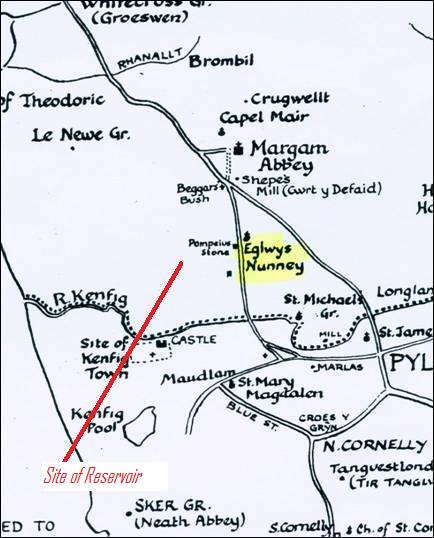
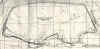

About Tata Steel Sailing ClubLocationIf traveling from the East, i.e. traveling from the Cardiff direction take the first exit off the J38 roundabout. If traveling from the West, i.e. traveling, from the Swansea direction take the 3rd exit off the J38 roundabout. The exit off the roundabout is signposted "Crematorium". The Crematorium is a few yards on the left, carry on past this and follow the road round, passing the British Oxygen Plant on your right, until you see the entrance gates of the reservoir on your left. Speed limit on the reservoir roads is 20mph. You will see the club house on your right on a promontory into the reservoir. Look out for the right turn, up a narrow lane, which is obscured by bushes as you approach. To gain entry to the reservoir you will need the code to the sailing club's combination lock; this is given to members when membership fees have been paid. Visitors, or prospective members who may be interested in finding out more about the club need to ring the clubhouse on 07951 553 488; a member will then come to the gate to let you in Eglwys Nunydd – What’s in a
Name? Why is Eglwys Nunydd reservoir, the home of Tata Steel Sailing Club, so called? Eglwys Nunydd is the name given to an area of land South East of Margam which at one time was a Grange belonging to Margam Abbey. It is often thought that there was a Nunnery or even a Convent there but this is not the case. Eglwys Nunydd was not a Convent, but from records of the 16th Century there existed a pre Norman church named Eglwys Nunney which was thought to be dedicated to Saint Non the mother of Saint David. Over the many years the name has become altered until today the area is called Eglwys Nunedd. (ref:” Margam Abbey” by A.Leslie Evans)  The reservoir was constructed on marshy
land within this area by surrounding the marsh with walls on three sides and
allowing the area to flood. “The Steel Company of Wales Sailing Club” from whom
we are descended, moved to this artificial lake in 1963 having previously
sailed on It has been suggested that the “Club” may be sailing on Holy water. Should this be true then there are many members who have experienced an involuntary baptism. Stan Williams, December 2013 The Early YearsThe Club was founded in 1953 and moved to its present site in 1963 and is a section of to the Tata Steel Sports and Social club. It is open to Tata Steel employees and all members of the public wishing to sail mono hull dinghies and windsurfers throughout the whole year. Originally with the Steel Company of Wales Sailing Club sailing took place in works holding pools and later moved to the docks of Port Talbot. The Steel Company of Wales became part of British Steel in 1957. Under the stewardship of Mr Fred Cartwright who was the manager of the the British Steel works at Port Talbot and Mr Ray James who was the planning engineer Eglwys Nunydd reservoir was opened in 1963 to service the works. Both keen sailors they were instrumental in moving the works sailing club from the docks to the reservoir. In 1957 the Porthcawl and Kenfig sailing club was founded using Kenfig pool, now part of Kenfig nature reserve, as a base. During the 1966 season it became clear to the members that the British Steel sailing club provided a size and facilities which would much better suite the development of sailing. Porthcawl and Kenfig sailing club was disbanded and its members joined the British steel sailing club. As a result of this "merger" there followed a period of close association between Porthcawl and British Steel sailing club which can be seen from the clubs trophy cabinet.
The association with the steel works is also represented by a number of trophies.
The club began to outgrow the clubhouse which was of wooden construction. Under the clubs longest serving commodore, Arthur Gough, a new clubhouse was constructed. Arthur was a draftsman at British Steel and drew the plans up himself. A loan of £10,000 was arranged with British Steel to be paid back over 10 years. Construction was undertaken by the Borough of Afan Community Program Agency with help from British Steel and club members as part of the Manpower Services Commission Community Program. The new clubhouse was opened on the 14th September 1985 by Mr. D C Williams M.A. J.P. Chairman, Area Manpower Board. A plaque above the kitchen servery commemorates the event. The old wooden clubhouse was removed and rebuild adjacent to the British Steel Sports and Social club where it remains to this day and is used as the Band practice room. |
Address details:
Tata Steel Sailing Club
For map information click on the link below:
The ReservoirEglwys Nunydd reservoir is fairly shallow averaging about 14 feet below its top level. The depth contour map shows where the deep and shallow areas are.The map was supplied by Stan Williams July 2009. Clubhouse DevelopementThe photos. below show the old clubhouse with the new clubhouse under construction in March 1985. Editor's NoteAnyone with any further information (or corrections) or photographs on the clubs early days then please let me know. My thanks to current Corus member and former Porthcawl and Kenfig member Alan Edwards for the above information, April 2008. Also to Stan Williams for updates and photos with regard to the club construction, December 2008/July 2009. Stan, a Corus employee, now retired, and club member since 1981 installed the new clubhouse electrics along with Arthur Gough in 1985. Eddie Morgan, Dec 2010. Recent HistoryCorus was formed out of the 1999 merger of British Steel and Dutch group Hoogovens. Anglo-Dutch steel firm Corus was taken over by Indian rival Tata Steel in October 2006. At the sailing clubs Special General Meeting of 7th November 2010 the sailing sections name was changed to Tata Steel Sailing Club, Margam. |

{kind=link}
{kind=link}
{kind=link}
{kind=link}
{kind=link}
{kind=link}